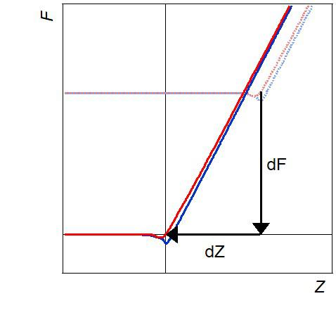
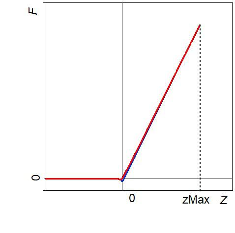
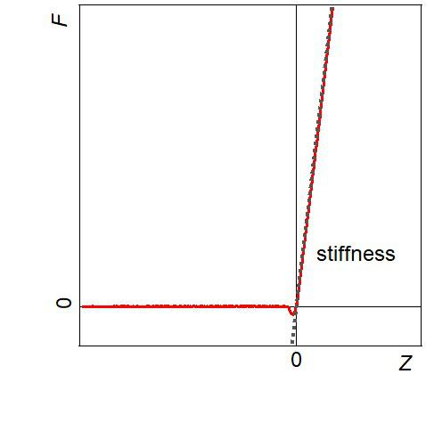

Channels#
A large number of parameters and physical values can be derived from Force Curves. These parameters or values are one dimensional scalars extracted from the two dimensional Force Curve. Consequently, the information of a three dimensional FV measurement is decreased to a two dimensional visualization - a spatial distribution of a property associated with the parameter or physical value in question. This parameter/value map is called channel.
In general, we distinguish between parameters (Channels based on parameters), which can be directly estimated from force curves and used as a quantitative measure within one experimental set-up, and physical values (Channels based on physical values), such as the Young’s modulus, which result from a multivariable fit, based on general theories (e.g., Hertz, DMT or JKR) and can be used as absolute quantities. This distinction is very important for the succession of steps taken in the analysis of FSD.
Note
Maps of physical values such as the Young’s modulus make multivariant fitting of single curves with a low signal-to-noise ratio necessary. This is only advised after subsets of curves have been averaged and investigated to narrow down the range of fit variables. This will be explained in detail in Channels based on physical values.
All parameters and physical values are explained and demonstrated in Channels based on parameters and Channels based on physical values. Real averaged Force Curves has been used for graphical demonstrations. The FSD Data is available in the test_data folder.
Channels based on parameters#
Channels based on parameters have the advantage that they can be used as a quantitative measure within one experimental set-up (identical tip and calibration) and therefore can be used to evaluate and categorize Force Curves within one experiment, e.g. mechanical heterogeneities and gradients. There are three categories of parameters.
Result of SOFA’s correction algorithm, e.g. raw stiffness
Measurement parameters, e.g. fzMax
Physical properties of the sample, e.g. stiffness
Result of SOFA’s correction algorithm#
raw offset and raw stiffness

|
First step of correcting Force Curves for topography and force offset is a linear fit of the whole approach part of the curve (red line). The fit follows the linear equation, with a being the raw offset and b the raw stiffness. The raw stiffness channel gives a first hint on the mechanical heterogeneity. Both channels are useful to find and exclude extreme outliers, which do not meet the typical shape of a Force Curve due to a failed or instable contact. |
dF and dZ (ForceDistanceTopography)
|  | Once SOFA’s algorithm has found the point of contact (Z = 0) in the approach part of the Force Curve, the curve’s scales are corrected by dF and dZ. The offset of force dF is usually fairly constant within one measurement and hence the dF channel is not shown in SOFA. However, the offset dZ has an important physical meaning. Distance between tip and sample at the beginning of a Force Curve varies with the sample’s topography at each measuring point. The correction of the Force Curve’s Z scale by shifting the point of contact to Z=0 by dZ compensates for the topography and is also called ForceDistanceTopography. |
Measurement parameters#
fzMax (Error Channel)

|
Before recording a Force Curve, the user is usually asked to give a limit for a control variable e.g., a maximum for the force fzMax. Depending on the software used to record Force Curves, this might be a maximum deflection or a (T-B) signal value, since all these values are proportional to each other. Once the chosen value is reached, the end of the approach and the start of the retract movement of the Z piezo is triggered. Since this is the control value during the experiment, this channel can be considered as an Error Channel with a scattering around the given control value fzMax. |
Physical properties#
zMax
|  | zMax is the z piezo displacement Z at maximum Force fzMax of the corrected curve. This channel gives a map of the maximum deformation i.e., compliant areas of the sample will allow for higher deformations and stiffer areas smaller deformations. |
Stiffness
|  | Stiffness is obtained from the slope of the approach part of a corrected Force Curve by a linear fit. It makes a difference if the FSD is F(Z) or δ(Z). In the former case the obtained parameter is the effective stiffness keff: In the latter case the parameter is the relative stiffness kr: with the sample’s and probe’s spring constant k and kc. [zitat] However, both quantities are connected by kc, and therefore contain comparable information as a channel. |
FAttractive, ZAttractive and AttractiveArea

|
Attractive forces can be evaluated by either work of attractive forces, which corresponds to the Attractive Area or the maximum attractive force FAttractive. Please note, that if your FSD is comprised of deflection instead of force, parameters have to be multiplied by kc in order to get attractive work [J] and force [N]. ZAttractive describes the z piezo position (relative to point of contact is Z=0) at which the attractive regime starts. [zitat ccc] |
Curves with Artefacts

|
The contact line of a force curve is considered to be monotonously increasing. Due to rough sample topography, sudden sample failure [zitat Adam], loose material or vibrational noise the force curves show non- monotonic increase, so-called zigzag lines. SOFA identifies those curves in a separate channel CurvesWithArtefacts, and assigns values 1 for curves with artefacts 0 for a monotonously increasing curve. |
Channels based on physical values#
Physical values, such as Young’s modulus are independent from the experimental set-up and can be directly compared to literature values. In order to evaluate experimental force spectroscopy data for physical values, one must apply a general theory, such as the Hertz Theory, DMT or JKR. Unfortunately, an indiscriminate and automated application of such fits on single curves can lead to rather large systematic and statistic errors. First, the exact geometry and mechanical properties of the AFM probe has to be established (tip shape and tip radius R, cantilever spring constant kc, the tip’s Young’s modulus Etip and poisson ratio νtip). Getting any of those parameters wrong leads to a systematic error affecting all subsequent analysis. Second, the proper theory which fits the conditions of the measurement needs to be chosen. Within one heterogeneous sample the applicability of a theory may change from one measured point to another, leading to a systematic error which affects the analysis only partially. For example, composite behavior (a mixture of more than one material in the measured volume cannot be described completely by any of the above theories. Third, individual force curves have a very low signal-to-noise ratio, resulting in a large statistical error.
Consequently, before single curves are fitted for physical values it is advisable to start the analysis with parameters and averaged curves as described in the workflow in chapter Selection Process and Averaged Subgroups of Force Curves.
Adding custom channels#
To add additional channels to SOFA you can either contact us under sofa@bam.de or extend the code yourself. See Calculate Channel Data for furhter information about the implementation of the SOFA channels.